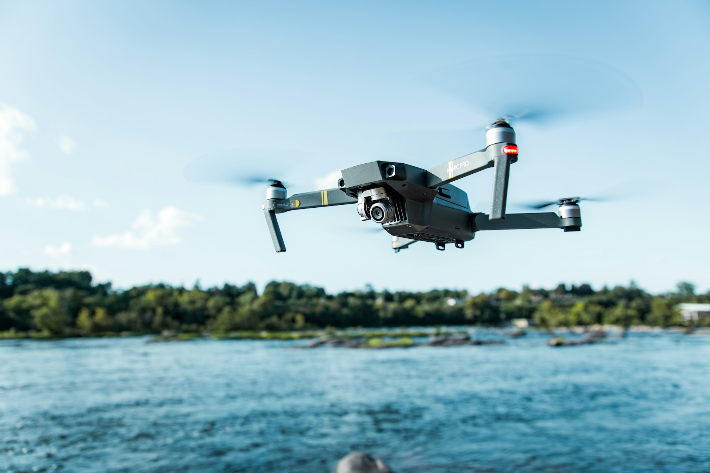

A drone is an unmanned aircraft. Drones are more formally known as unmanned aerial vehicles (UAVs) or unmanned aircraft systems. Essentially, a drone is a flying robot that can be remotely controlled or fly autonomously using software-controlled flight plans in its embedded systems, that work in conjunction with onboard sensors and a global positioning system
A drone refers to an aerial vehicle that receives remote commands from a pilot or relies on software for autonomous flight. Many drones display features like cameras for collecting visual data and propellers for stabilizing their flight patterns. Sectors like videography, search and rescue, agriculture and transportation have adopted drone technology.